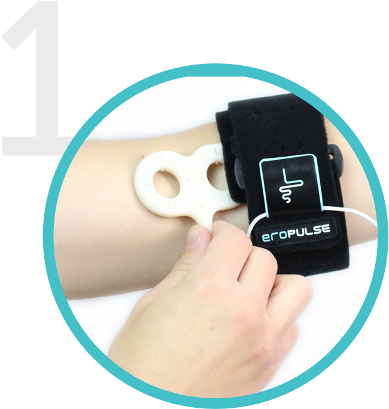

What is eroPulse
Does It Work? Where Can I Place eroPulse? eroPulse is a wearable pain management device utilizing amazing cellular healing technology. This clinically proven technology can be worn 24/7 without feeling any sensation for comfortable wear throughout the day.
Features
How Does It Work?
eroPulse heals at the cellular level by removing cellular waste more efficiently and bringing in more nutrients the cell needs for faster healing and provides better blood flow. eroPulse is healing at the cellular level not blocking the pain like medicines and other treatments do.
Place on site of pain
Plug in and turn on
 Heal throughout the day
Heal throughout the day
Where Can I Place eroPulse?
EroPulse can be used anywhere on the body. The Technology has been proven to provide effective pain relief from muscle pain, joint discomforts and nerve pain. Just place the energy pad to the area of the pain with any method (elastic braces, socks for foot, etc) and let the healing begin.
How is eroPulse Different?
Mobile and Comfortable to Wear: with the wearable technology similar to the size of the smartphones, you can take the healing technology anywhere and anytime; while working, watching TV, running errands, and sleeping without feeling any uncomfortable sensation.
Cellular Healing: eroPulse is pain management device that heals at cellular level not an inhibitor that just blocks the pain signal from the reaching the brain, like pain medications. eroPulse’s healing technology takes time but it resolves your root cause of pain, cell damage. Be patient as your body begins to heal from this amazing technology. Most will begin to notice the difference within few days to couple weeks. The longer you use the healing technology, the faster it will heal.
Affordable and Safe to Use: eroPulse was created to provide this healing technology to everyone. We utilize the same technology used by the smartphone industry to make the eroPulse affordable, accessible, and available to everyone. With IEC 60601-1 test certificate (Medical electrical equipment, general requirements for basic safety and essential performance) you can be assured that the eroPulse is safe to use with no risks of overdosing like with other traditional medicines.
What Types Of Pain Does It Treat?
How Do I Know It's Working?
If word “energy pad” is shown on the screen and timer is counting down, the device is delivering healing energy.
With pulsed electromagnetic field therapy (PEMF) your body can establish normal blood flow without the pain or annoyance you get from a TENS device.
What's Included
- 90 Day Money Beck Guarantee
- Pulse Generator with built-in Energy Pad Tester
- Energy Pad
- eroPulse Charger with Micro USB Cord
- Body Strap
The Solution
The History
Despite widespread acceptance of Pulsed Electromagnetic Field technology all over Europe and Asia, it continues to slip under the radar. The pharmaceutical industry dominates the pain management sector of healthcare here, and much of the population is skeptical of a treatment plan that requires no medication. Simply put, it seems too good to be true.
However, in parts of Europe and Asia, PEMF and similar therapies are already being offered on a daily basis and successfully address a wide array of ailments.
Yet in the US, the accepted way to receive treatment is to book an expensive appointment in a hospital or doctor’s office. eroPulse eliminates this inconvenience and offers the same technology to you in the comfort of your own home. Help us democratize health, making sure this natural and proven aid to eliminating pain and healing the body, is as widely available as possible.
Driven by the ambition to share PEMF technology with the world, Sam founded Pulse Therapeutic as the first step in disseminating PEMF technology to the public. His success with six medical start-ups has given him the tools to conceptualize and develop eroPulse, a PEMF device for daily life.
Treatable Conditions
FAQs
Q: How often should I use eroPulse?
We recommend daily treatment for at least couple of hours, either during the day, overnight or both. The longer you use eroPulse, the faster you will feel the relief.
Q: Can I overdose? Are there side effects? Is it addictive?
No. The body is already electric and PEMF therapy simply produces additional energy in the body to help it heal faster. No harmful chemicals are pushed into the body. The body cannot overdose as only damaged, injured or unhealthy areas use the extra energy to repair and regenerate.
Q: Will I feel pain during therapy?
No pain! If you feel pain-free pulsing from PEMF, start with Low strength and gradually increase to High. Or, do therapy in sets of 30 minutes to an hour throughout the day.
Q: How quickly will my illness or health issue heal?
It varies on the extent of your health problem and how often you use eroPulse. Cells with minor damage can be quickly repaired before an issue worsens and becomes obvious. If you wait until you have significant health issues, the cells may be too damaged for PEMF to produce the desired results or may take longer to heal. However, with daily PEMF and your body’s natural healing timelines and processes, your body will heal damaged cells gradually. It takes patience, acceptance and daily use of eroPulse to see results. PEMF therapy does not cure diseases, instead it improves bodily functions so that it can better support and heal itself.